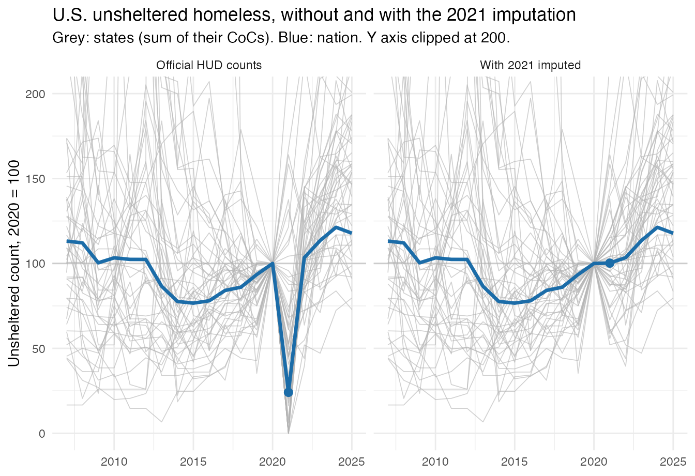
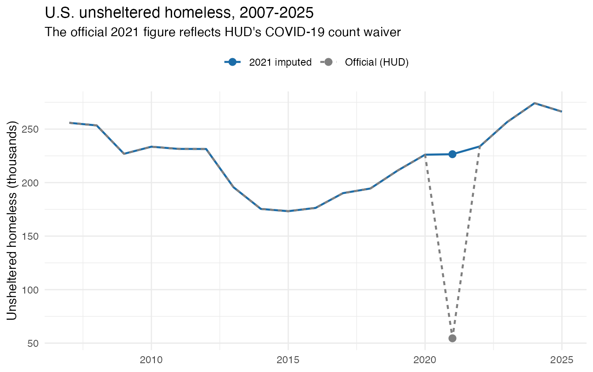
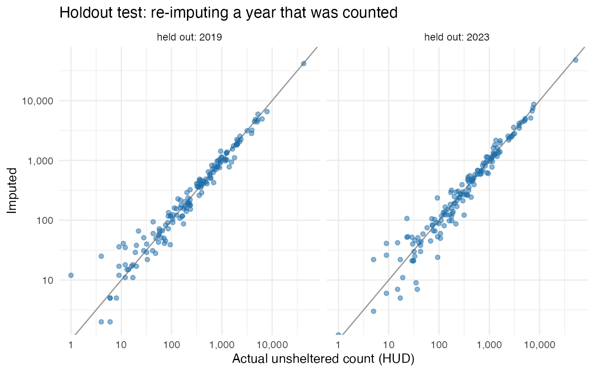
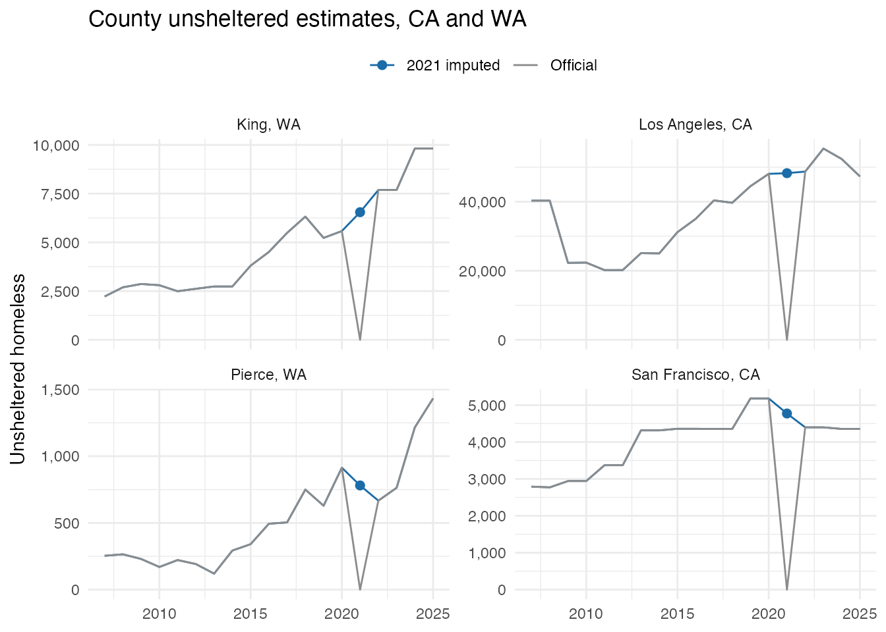

Imputing the 2021 unsheltered count
Source:vignettes/unsheltered-imputation.Rmd
unsheltered-imputation.RmdIn January 2021, during COVID-19, HUD allowed Continuums of Care (CoCs) to skip the unsheltered part of the Point-in-Time (PIT) count. Many did, and report 0 unsheltered people for 2021. Taken at face value, those zeros put a hole in every unsheltered and total series that runs through 2021.
COCHomeless leaves HUD’s published figures alone and adds separate, flagged columns with an imputed value for the missing counts:
| dataset | official (HUD) | with 2021 imputed | flag |
|---|---|---|---|
pit_coc |
total, unsheltered
|
total_imp, unsheltered_imp
|
unsheltered_imputed,
imputation_method
|
county_pit |
total, unsheltered
|
total_imp, unsheltered_imp
|
unsheltered_imputed |
pit_us |
total, unsheltered
|
total_imp, unsheltered_imp
|
n_coc_imputed |
Outside the imputed CoC-years the _imp columns equal the
official ones, so you can use the _imp columns throughout
for trend analysis and the official columns whenever you need to
reproduce HUD. The same note travels with the data:
cat(strwrap(attr(pit_coc, "note")), sep = "\n")
#> unsheltered_imp / total_imp: HUD's 2021 COVID waiver let CoCs skip the
#> unsheltered count. Where a CoC reported 0 unsheltered in 2021 but
#> counted unsheltered people in the years either side, unsheltered_imp is
#> an ARIMA / Kalman-smoothed estimate (flag unsheltered_imputed = TRUE).
#> Everywhere else unsheltered_imp == unsheltered. HUD's official columns
#> are unchanged. See vignette('unsheltered-imputation', package =
#> 'COCHomeless').National overview
pit_us[pit_us$year %in% 2019:2023,
c("year", "unsheltered", "unsheltered_imp", "total", "total_imp", "n_coc_imputed")]
#> year unsheltered unsheltered_imp total total_imp n_coc_imputed
#> 13 2019 211293 211293 567715 567715 0
#> 14 2020 226080 226080 580466 580466 0
#> 15 2021 54504 226529 380630 552655 159
#> 16 2022 233832 233832 582462 582462 0
#> 17 2023 256610 256610 653104 653104 0With and without the imputation
The two panels below show the same series. The left panel uses HUD’s
official counts and the right panel uses the _imp columns.
To put states of very different sizes on one axis, every series is
indexed to its 2020 count (2020 = 100). Each grey line is a state, built
by summing its CoCs in pit_coc. The heavy line is the
nation.
library(ggplot2)
st <- aggregate(cbind(unsheltered, unsheltered_imp) ~ state + year,
data = transform(pit_coc, state = substr(coc_num, 1, 2)), FUN = sum)
st <- st[st$state %in% state.abb | st$state == "DC", ]
nat_s <- data.frame(state = "US", year = pit_us$year,
unsheltered = pit_us$unsheltered, unsheltered_imp = pit_us$unsheltered_imp)
index_2020 <- function(d, col) {
base <- d[d$year == 2020, c("state", col)]
names(base)[2] <- "base"
d <- merge(d, base, by = "state")
d$index <- 100 * d[[col]] / d$base
d[d$base > 0, c("state", "year", "index")]
}
panel <- function(col, label) {
rbind(cbind(index_2020(st, col), level = "State"),
cbind(index_2020(nat_s, col), level = "United States")) |>
transform(panel = label)
}
both <- rbind(panel("unsheltered", "Official HUD counts"),
panel("unsheltered_imp", "With 2021 imputed"))
both$panel <- factor(both$panel, c("Official HUD counts", "With 2021 imputed"))
ggplot(both, aes(year, index, group = state)) +
geom_hline(yintercept = 100, colour = "grey80") +
geom_line(data = subset(both, level == "State"), colour = "grey70",
alpha = 0.6, linewidth = 0.3) +
geom_line(data = subset(both, level == "United States"), colour = "#1b6ca8",
linewidth = 1.2) +
geom_point(data = subset(both, level == "United States" & year == 2021),
colour = "#1b6ca8", size = 2.5) +
facet_wrap(~ panel) +
coord_cartesian(ylim = c(0, 200)) +
labs(x = NULL, y = "Unsheltered count, 2020 = 100",
title = "U.S. unsheltered homeless, without and with the 2021 imputation",
subtitle = "Grey: states (sum of their CoCs). Blue: nation. Y axis clipped at 200.") +
theme_minimal(base_size = 11)
On the left, 2021 falls sharply for the nation and drops to near zero for several states. That drop comes from the waiver and does not reflect a real change. On the right, the imputed values close the gap, and 2021 sits between 2020 and 2022 for the nation and for most states. States that still dip on the right did partial 2021 counts. Those counts are kept as HUD reported them (see Cautions).
The same comparison in raw counts:
nat <- rbind(
data.frame(year = pit_us$year, value = pit_us$unsheltered, series = "Official (HUD)"),
data.frame(year = pit_us$year, value = pit_us$unsheltered_imp, series = "2021 imputed"))
ggplot(nat, aes(year, value / 1000, colour = series, linetype = series)) +
geom_line(linewidth = 0.8) +
geom_point(data = subset(nat, year == 2021), size = 2.5) +
scale_colour_manual(values = c("Official (HUD)" = "grey50", "2021 imputed" = "#1b6ca8")) +
labs(x = NULL, y = "Unsheltered homeless (thousands)", colour = NULL, linetype = NULL,
title = "U.S. unsheltered homeless, 2007-2025",
subtitle = "The official 2021 figure reflects HUD's COVID-19 count waiver") +
theme_minimal(base_size = 11) + theme(legend.position = "top")
Which counts are imputed
A 2021 value is treated as missing only when all three hold:
- the CoC reported 0 unsheltered people in 2021;
- it reported more than 0 in the nearest earlier year; and
- it reported more than 0 in the nearest later year.
A CoC that genuinely never finds unsheltered people keeps its zero, and a CoC that did a partial 2021 count (a low but non-zero number) is not imputed. Nothing outside 2021 is imputed.
imp <- pit_coc[pit_coc$unsheltered_imputed, ]
nrow(imp) # CoC-years imputed
#> [1] 159
table(imp$imputation_method)
#>
#> arima_kalman log_linear_interp
#> 157 2
head(sort(table(substr(imp$coc_num, 1, 2)), decreasing = TRUE), 10) # by state
#>
#> CA FL MI MN GA NY IL OH WA LA
#> 36 11 10 8 7 7 6 6 6 5Method
For each affected CoC, the unsheltered series for 2007-2025 is
modelled on the log scale, log(1 + unsheltered), with 2021
treated as missing:
- an ARIMA model is selected automatically
(
forecast::auto.arima), required to difference once (d = 1); - the missing year is filled by Kalman smoothing
(
imputeTS::na_kalman), so the estimate uses the years after 2021 as well as those before; - the value is back-transformed and rounded. It is never negative.
A CoC with fewer than six observed years (two in this release) falls
back to linear interpolation on the log scale;
imputation_method records which was used.
Why d = 1. Without it,
auto.arima usually picks a stationary model, which
pulls the gap toward the CoC’s long-run average. That average is
dominated by the higher or lower counts of the late 2000s, not 2020 and
2022. In the holdout test below, the unconstrained model was about 20%
low in total. Forcing one difference removes that bias.
Here is the procedure for one CoC, Seattle/King County (WA-500):
d <- pit_coc[pit_coc$coc_num == "WA-500", ]
z <- log1p(d$unsheltered)
z[d$year == 2021] <- NA
fit <- forecast::auto.arima(ts(z, start = min(d$year)), d = 1)
fit
#> Series: ts(z, start = min(d$year))
#> ARIMA(0,1,0) with drift
#>
#> Coefficients:
#> drift
#> 0.0825
#> s.e. 0.0304
#>
#> sigma^2 = 0.01773: log likelihood = 10.33
#> AIC=-16.65 AICc=-15.85 BIC=-14.87
smoothed <- imputeTS::na_kalman(ts(z, start = min(d$year)), model = fit$model)
round(expm1(smoothed[d$year == 2021])) # imputed 2021
#> [1] 6547
d$unsheltered_imp[d$year == 2021] # value shipped in pit_coc
#> [1] 6547How well does it work?
There is no true 2021 count to check against, so the method is tested on years that were counted. For the same CoCs, 2019 and then 2023 are hidden (2021 is dropped too), re-imputed with the identical procedure, and compared with HUD’s actual figure:
bt <- read.csv(system.file("extdata", "unsheltered_backtest.csv", package = "COCHomeless"))
err <- function(b) c(
CoCs = nrow(b),
median_abs_error_pct = round(100 * median(abs(b$imputed - b$actual) / b$actual), 1),
total_error_pct = round(100 * (sum(b$imputed) - sum(b$actual)) / sum(b$actual), 1),
within_25pct = round(100 * mean(abs(b$imputed - b$actual) / b$actual < 0.25)))
do.call(rbind, lapply(split(bt, bt$hold_year), err))
#> CoCs median_abs_error_pct total_error_pct within_25pct
#> 2019 156 15.6 -4.4 67
#> 2023 157 16.8 -3.3 61
ggplot(bt, aes(actual, imputed)) +
geom_abline(colour = "grey60") +
geom_point(alpha = 0.5, colour = "#1b6ca8") +
scale_x_log10(labels = scales::comma) + scale_y_log10(labels = scales::comma) +
facet_wrap(~ hold_year, labeller = labeller(hold_year = function(x) paste("held out:", x))) +
labs(x = "Actual unsheltered count (HUD)", y = "Imputed",
title = "Holdout test: re-imputing a year that was counted") +
theme_minimal(base_size = 11)
#> Warning in scale_y_log10(labels = scales::comma): log-10
#> transformation introduced infinite values.
Read these results this way. The national and state totals are close (a few percent low). An individual CoC’s imputed value is typically within about 15% of the truth, and within 25% about two times in three. For any one small CoC, it can be well off.
County level
The imputed CoC addition (unsheltered_imp - unsheltered)
is pushed down to counties with exactly the split the county
estimates use: each county gets the share of the CoC’s people
it was apportioned in county_coc_alloc, rounded so the
CoC’s addition is preserved. Counties with no CoC, which are filled by
the spatial model in homeless, are not adjusted.
California and Washington
focus <- c("06037" = "Los Angeles, CA", "06075" = "San Francisco, CA",
"53033" = "King, WA", "53053" = "Pierce, WA")
cp <- county_pit[county_pit$fips %in% names(focus) & county_pit$year %in% 2019:2023, ]
cp$county <- focus[cp$fips]
cp[order(cp$county, cp$year),
c("county", "year", "unsheltered", "unsheltered_imp", "unsheltered_imputed")]
#> county year unsheltered unsheltered_imp unsheltered_imputed
#> 56462 King, WA 2019 5228 5228 FALSE
#> 56463 King, WA 2020 5578 5578 FALSE
#> 56464 King, WA 2021 0 6547 TRUE
#> 56465 King, WA 2022 7685 7685 FALSE
#> 56466 King, WA 2023 7685 7685 FALSE
#> 3908 Los Angeles, CA 2019 44494 44494 FALSE
#> 3909 Los Angeles, CA 2020 48065 48065 FALSE
#> 3910 Los Angeles, CA 2021 0 48261 TRUE
#> 3911 Los Angeles, CA 2022 48720 48720 FALSE
#> 3912 Los Angeles, CA 2023 55386 55386 FALSE
#> 56652 Pierce, WA 2019 629 629 FALSE
#> 56653 Pierce, WA 2020 914 914 FALSE
#> 56654 Pierce, WA 2021 0 781 TRUE
#> 56655 Pierce, WA 2022 667 667 FALSE
#> 56656 Pierce, WA 2023 763 763 FALSE
#> 4269 San Francisco, CA 2019 5180 5180 FALSE
#> 4270 San Francisco, CA 2020 5180 5180 FALSE
#> 4271 San Francisco, CA 2021 0 4772 TRUE
#> 4272 San Francisco, CA 2022 4397 4397 FALSE
#> 4273 San Francisco, CA 2023 4397 4397 FALSE
cp <- county_pit[county_pit$fips %in% names(focus), ]
cp$county <- focus[cp$fips]
long <- rbind(
data.frame(cp[, c("county", "year")], value = cp$unsheltered, series = "Official"),
data.frame(cp[, c("county", "year")], value = cp$unsheltered_imp, series = "2021 imputed"))
ggplot(long, aes(year, value, colour = series)) +
geom_line() +
geom_point(data = subset(long, year == 2021 & series == "2021 imputed"), size = 2) +
facet_wrap(~ county, scales = "free_y") +
scale_colour_manual(values = c("Official" = "grey55", "2021 imputed" = "#1b6ca8")) +
scale_y_continuous(labels = scales::comma) +
labs(x = NULL, y = "Unsheltered homeless", colour = NULL,
title = "County unsheltered estimates, CA and WA") +
theme_minimal(base_size = 11) + theme(legend.position = "top")
Cautions
- These are model estimates, not counts. No uncertainty interval is shipped. For inference that depends on 2021, run sensitivity analyses: drop 2021, use the official values, or use the imputed ones.
- Partial 2021 counts are kept as reported. Some CoCs did a reduced unsheltered count and report a low, non-zero number. Those values are HUD’s and are not imputed, so 2021 may still run somewhat low in those CoCs.
- Sheltered counts are not imputed. 2021 sheltered counts were collected, though shelter capacity itself fell during the pandemic.
- County imputation inherits the apportionment. A county’s imputed people are its CoC’s imputed people, split the way the county estimates split the CoC. They are only as good as that split.
-
Territories. Imputed territory CoCs (GU, MP, PR)
are included in
pit_cocandpit_usbut have no counties incounty_pit.